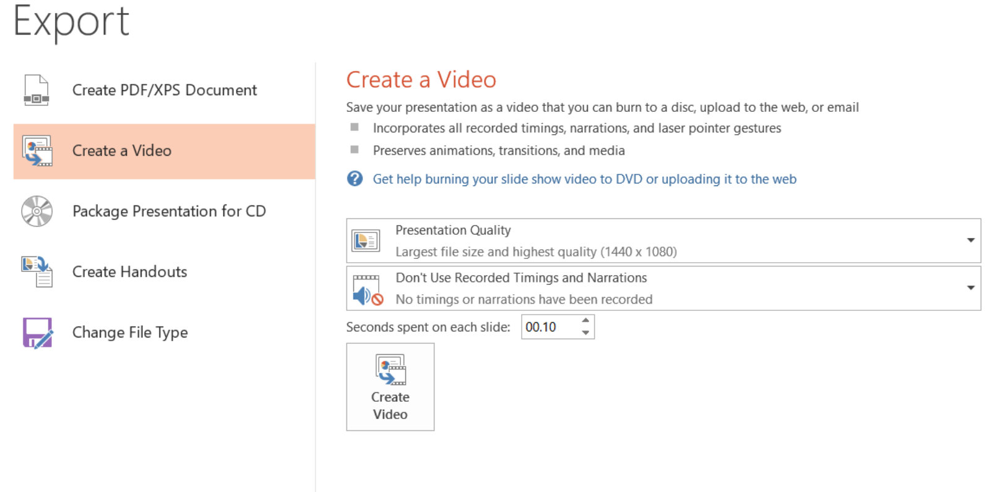
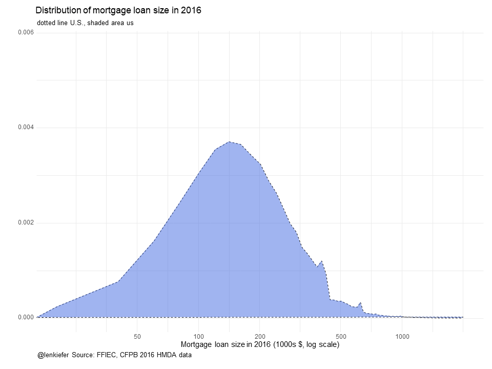

IN THIS POST I WANT SHARE A METHOD FOR MAKING SMOOTH POWERPOINT ANIMATIONS USING R.
Also see other posts in this series:
- Crafting a PowerPoint Presentation with R LINK
- PURRRTY PowerPoint with R LINK
- PURRRtier PowerPoint with R LINK
Motivation
Why would you want to do this? We’ve covered how to make an animated gif with R and that works pretty well. But there are a couple advantages with this approach. For one, you might prefer to to have an mp4 file format rather than a .gif format (for example if you prefer to have the pause ability that comes with mp4). Also, you might not have access to Imagemagick. It might be more convenient to have everything in PowerPoint as vector graphics you can edit rather than static image files. You might also want to take your mp4 animation and stick it into another PowerPoint.
Strategy
The strategy is pretty simple. We’ll apply the same approach as we did here but instead of writing a bunch of image files (.png) we’ll use Officer to write a bunch of PowerPoint slides. Then we’ll use PowerPoint to create our mp4 animated movie.
Animate a time series
Whether or not animation is a good idea or not is highly situational. See for example, discussion attached to this Twitter poll from Andy Cotgreave.
Animation in #dataviz: good or bad? I left out "It depends" - no fence sitting on this one. (reply to this to elaborate on yr answer)
— Andy Cotgreave (@acotgreave) October 20, 2017
Often animation is unecessary or even couterproductive. But sometimes an animation can help with understanding. Time series data are one case where I think animation often is useful. A line chart shows a trend over time well, but adding a sequential reveal can help to reinforce the trend.
As an example let’s make our spooky mortgage rate chart.
Get data, set theme and make chart
The basic chart is the same as the one we made in this post. The code is short, so I’ll include it below, but check out the post for more details.
#####################################################################################
## Load libraries ##
#####################################################################################
library(tidyverse)
library(readxl)
library(tidyquant)
library(tibbletime)
library(ggridges)
library(viridis)
library(cowplot)
library(ggbeeswarm)
#####################################################################################
## Get mortgage data ##
# Can also get direct here: http://www.freddiemac.com/pmms/docs/historicalweeklydata.xls
#####################################################################################
df<- tq_get("MORTGAGE30US",get="economic.data",from="1971-04-01")
extrafont::loadfonts(device="win") # needed for fonts (on windows, not sure about unix/mac)
#Create spooky dark theme:
theme_spooky = function(base_size = 10, base_family = "Chiller") {
theme_grey(base_size = base_size, base_family = base_family) %+replace%
theme(
# Specify axis options
axis.line = element_blank(),
axis.text.x = element_text(size = base_size*0.8, color = "white", lineheight = 0.9),
axis.text.y = element_text(size = base_size*0.8, color = "white", lineheight = 0.9),
axis.ticks = element_line(color = "white", size = 0.2),
axis.title.x = element_text(size = base_size, color = "white", margin = margin(0, 10, 0, 0)),
axis.title.y = element_text(size = base_size, color = "white", angle = 90, margin = margin(0, 10, 0, 0)),
axis.ticks.length = unit(0.3, "lines"),
# Specify legend options
legend.background = element_rect(color = NA, fill = " gray10"),
legend.key = element_rect(color = "white", fill = " gray10"),
legend.key.size = unit(1.2, "lines"),
legend.key.height = NULL,
legend.key.width = NULL,
legend.text = element_text(size = base_size*0.8, color = "white"),
legend.title = element_text(size = base_size*0.8, face = "bold", hjust = 0, color = "white"),
legend.position = "none",
legend.text.align = NULL,
legend.title.align = NULL,
legend.direction = "vertical",
legend.box = NULL,
# Specify panel options
panel.background = element_rect(fill = " gray10", color = NA),
#panel.border = element_rect(fill = NA, color = "white"),
panel.border = element_blank(),
panel.grid.major = element_line(color = "grey35"),
panel.grid.minor = element_line(color = "grey20"),
panel.spacing = unit(0.5, "lines"),
# Specify facetting options
strip.background = element_rect(fill = "grey30", color = "grey10"),
strip.text.x = element_text(size = base_size*0.8, color = "white"),
strip.text.y = element_text(size = base_size*0.8, color = "white",angle = -90),
# Specify plot options
plot.background = element_rect(color = " gray10", fill = " gray10"),
plot.title = element_text(size = base_size*1.2, color = "white",hjust=0,lineheight=1.25,
margin=margin(2,2,2,2)),
plot.subtitle = element_text(size = base_size*1, color = "white",hjust=0, margin=margin(2,2,2,2)),
plot.caption = element_text(size = base_size*0.8, color = "white",hjust=0),
plot.margin = unit(rep(1, 4), "lines")
)
}
# make plot
ggplot(data=df[2015~2017], aes(x=date,y=price,fill=price))+
geom_point(data=df[2015~2017],size=2,color="gray",alpha=0.5,shape=21,fill="orange")+
geom_line(color="orange",size=0.5)+
#geom_step(color="orange", size=1.1)+
theme_spooky(base_family="Chiller",base_size=20)+
labs(x="", y="",
title="30-year Fixed Mortgage Rate (%)",
subtitle="U.S. weekly average rates",
caption="@lenkiefer Source: Freddie Mac Primary Mortgage Market Survey")+
theme(plot.title=element_text(color="orange",face="bold",family="Chiller",size=24),
panel.border=element_blank(),
plot.subtitle=element_text(color="orange",face="italic",family="Chiller",size=20),
plot.caption=element_text(hjust=0,size=18))
Save to PowerPoint
Now that we have our spooky plot we can go ahead an write an animation. In this case the sequential reveal doesn’t really need smooth interpolation (more on that later), so we’ll just write one slide for each observation in our data (dot on the chart).
What we’re going to do is write a bunch of image files (just like we do when we write a gif), but instead of using Imagemagick to compose a gif out of them, we’ll write them to PowerPoint.
mydir<-'YOURDIRECTORY' # where you will save images
dlist<-unique(df[2016~2017]$date) # get a list of dates
N<-length(dlist) # figure out how many poins we have
myf <- function(i)
{
file_path = paste0(mydir, "/ts/plot-",
5000+i ,".png")
rmin<-3.4 # set a floor for the image
g<-
ggplot(data=df[2016~2017], aes(x=date,y=price,fill=price))+
geom_line(alpha=0)+ # add an invisible line for the full time series
geom_point(data=filter(df[2016~2017], # use tibbletime time filtes
date<=dlist[i]), # plot up to point i
size=1.2,color="gray",alpha=0.5,shape=21,fill="orange")+
geom_line(data=filter(df[2016~2017],
date<=dlist[i]),color="orange",size=0.5)+
theme_spooky(base_family="Chiller",base_size=10)+
labs(x="", y="",
title="30-year Fixed Mortgage Rate (%)",
subtitle="U.S. weekly average rates",
caption="@lenkiefer Source: Freddie Mac Primary Mortgage Market Survey")+
# modify the theme to make the text a big smaller (experiment to get it right)
theme(plot.title=element_text(color="orange",face="bold",family="Chiller",size=14),
panel.border=element_blank(),
plot.subtitle=element_text(color="orange",face="italic",family="Chiller",size=12),
plot.caption=element_text(hjust=0,size=10))
# save image
ggsave(file_path, g, width = 7, height = 4, units = "cm",scale=1.5)
return(g)
}
lapply(1:N,myf) # equivalent ot purrr::map(1:N, myf)
g<-myf(N)
# Pause at end of the animation
for (i in N:(N+10)) {
file_path = paste0(mydir, "/plot-",5000+i ,".png")
g<-myf(N)
ggsave(file_path, g, width = 7, height = 4 , units = "cm",scale=1.5)
}After running through this we’ll have a bunch of images saved in YOURDIRECTORY. Now we can run officer to paste these images into a PowerPoint.
my_pres<-read_pptx("data/blank.pptx") #get a blank PowerPoint Template
# you could make your own spooky-themed template if you like
# function to write slides
myp<- function(i){
my_pres %>%
add_slide(layout = "Blank", master = "Office Theme") %>%
ph_with_img_at( src= paste0(mydir, "/plot-",5000+i ,".png") , 0.1, 0.1, 9.8,7.3) ->
my_pres
print(i) # could add a counter if you want
}
# use purrr::walk to write slides
walk(1:104,myp)
# save your spooky slides:
my_pres %>%
print( target = "WHEREYOUWANTYOURSLIDES/spooky.pptx") %>%
invisible()OK, so now you want an animation
We’ve now got a spooky PowerPoint with about 100 slides. You can use PowerPoint’s Export functionality to save to mp4 format (I’m using Office Professional Plus 2013 for Windows, might differ for you). Be sure to decrease the seconds spent on each slide to something like 0.02 seconds or you’ll have a very slow animation.

Saving it will give you file like this spooky.mp4.
Using tweenr for smooth interpolations
Let’s try another animation and use tweenr to make smooth interpolations between states.
For this example, let’s compare the distribution of mortgage loan sizes in 2016 for the states of California, Texas, and Ohio.
We’ll use the Home Mortgage Disclosure (HMDA) data.
These data provide the closest thing to a publicly-available comprehensive summary of U.S. mortgage market activity that we’ll get (for right now). The recently released data is for 2016 and provides a detailed view of mortgage market activity across the country.
We can load our data from a .csv file we get from U.S. Consumer Financial Protection Bureau’s website. Using their filters, I restricted my data to first-lien mortgage loans originated in 2016 for home purchase and refinance of 1-4 family properties. That should give you just over 7.5 million records. This link will take you to the CFPB webpage page with the filters I used. If you go to that page and click download (could take a while) you’ll end up with a file called hmda_lar.csv, which I have saved in a data directory.
Get data and plot static plot
We can get data following the steps outlined in this post. In that post we said:
We can load our data from a .csv file we get from U.S. Consumer Financial Protection Bureau’s website. Using their filters, I restricted my data to first-lien mortgage loans originated in 2016 for home purchase and refinance of 1-4 family properties. That should give you just over 7.5 million records. This link will take you to the CFPB webpage page with the filters I used. If you go to that page and click download (could take a while) you’ll end up with a file called
hmda_lar.csv, which I have saved in a data directory.
Let’s assume we’ve followed along there and now have a data of first-lien home purchase and refinance mortgage loans on single-family properties in the HMDA data.
What we want is a smooth animation that compare the distribution of loan sizes across these three states. First, let’s load the data and make a static plot.
mydata<-fread("data/hmda_lar.csv")
mydata<-mydata[,list(state_name,state_abbr,county_name,owner_occupancy_name,
loan_amount_000s,loan_purpose_name,loan_type_name,
agency_abbr,respondent_id,population,
applicant_income_000s,msamd_name)]
mydata <- mydata[,":="(upb=as.numeric(loan_amount_000s),
inc=as.numeric(applicant_income_000s))]
mydata<- mydata[, ratio:=upb/inc]
# Compute density estimates
# for U.S.
d.us<-density(mydata$upb, n=100, from=0,to=2000)
d.ca<-density(mydata[state_abbr=="CA",]$upb, n=100, from=0,to=2000)
d.tx<-density(mydata[state_abbr=="TX",]$upb, n=100, from=0,to=2000)
d.oh<-density(mydata[state_abbr=="OH",]$upb, n=100, from=0,to=2000)
# make static plot
ggplot(data=NULL)+
geom_polygon(aes(x=d.ca$x,y=d.ca$y, fill="CA"),alpha=0.5)+
geom_polygon(aes(x=d.tx$x,y=d.tx$y, fill="TX"),alpha=0.5)+
geom_polygon(aes(x=d.oh$x,y=d.oh$y, fill="OH"),alpha=0.5)+
geom_polygon(aes(x=d.us$x,y=d.us$y, fill="US"),alpha=0,color="black",linetype=2,fill="gray")+
scale_x_log10(breaks=c(50,100,200,500,1000))+
scale_fill_viridis(name="State",option="D",discrete=T)+
theme_minimal()+
labs(x="Mortgage loan size in 2016 (1000s $, log scale)",y="",
title="Distribution of mortgage loan size in 2016",
subtitle="dotted line U.S.")+
theme(legend.position="top")
Now we can take these plots and craft an animation that compares the distribution. We’ll start with just the U.S. density and then morph it (leaving the dotted line behind) to each of our three states. To do so, we’ll use tweenr to more the distribution from on to another.
# functions to subset data
myf<-function(s="ca"){
switch(s,
us=d.us,
ca=d.ca,
tx=d.tx,
oh=d.oh)
}
tweenf<-function(s="ca"){
dd<-myf(s)
df<-data.frame(x=dd$x,y=dd$y,state=factor(s))
return(df)
}
my.list<-lapply(c("us","oh","tx","ca","us"),tweenf)
tf <- tween_states(my.list, tweenlength= 2, statelength=3,
ease=rep('cubic-in-out',17),nframes=50)
N<-max(tf$.frame) # number of animation frames
plotf<-function(i=N) {
g<-
ggplot(data=filter(tf,.frame==i))+
geom_polygon(data=tweenf("oh"),alpha=0,aes(x=x,y=y,fill=state))+
geom_polygon(data=tweenf("ca"),alpha=0,aes(x=x,y=y,fill=state))+
geom_polygon(data=tweenf("tx"),alpha=0,aes(x=x,y=y,fill=state))+
geom_polygon(data=tweenf("us"),alpha=0,aes(x=x,y=y,fill=state))+
geom_polygon(aes(x=d.us$x,y=d.us$y, fill="US"),alpha=0,color="black",linetype=2,fill="gray")+
geom_polygon(aes(x=x,y=y),fill="royalblue",alpha=0.5)+
scale_x_log10(breaks=c(50,100,200,500,1000))+
scale_fill_viridis(name="State",option="D",discrete=T)+
theme_minimal()+
labs(x="Mortgage loan size in 2016 (1000s $, log scale)",y="",
title="Distribution of mortgage loan size in 2016",
subtitle=paste("dotted line U.S., shaded area",head(filter(tf,.frame==i),1)$state),
caption="@lenkiefer Source: FFIEC, CFPB 2016 HMDA data")+
theme(legend.position="none",
plot.caption=element_text(hjust=0))
}
# Load blank.pptx, an empty powerpoint that serves as a template
my_pres<-read_pptx("data/blank.pptx")
# function for adding slides
myp<- function(i){
my_pres %>%
add_slide(layout = "Blank", master = "Office Theme") %>%
ph_with_vg_at( code=print(plotf(i)) , 0.1, 0.1, 9.8,7.3) ->
my_pres
print(i)
}
# use purrr::walk() to write the files
walk(1:N,myp)
# save the .pptx file
my_pres %>%
print( target = paste0(mydir,"/hmda_dens.pptx")) %>%
invisible()Running this will give you a PowerPoint deck with a bunch of slides. You can watch it in PowerPoint as a slideshow or export as a movie. I’ve converted the mp4 file into a gif file you can see below:

Animating a single slide.
This can be fun. Remember our kandinsky plot we made with the kandinsky package? We can make an animated one with PowerPoint. What we can do is save a single slide, but then animate it sequentially using PowerPoint’s animated reveal.
kandinsky::kandinsky(myx) #myx is some data.frame 
my_pres<-read_pptx("data/blank.pptx")
my_pres %>%
add_slide("Title and Content","Office Theme") %>%
ph_with_text(type="title", str="...") %>%
ph_with_vg(type="body",index=1,code= print(kandinsky::kandinsky(myx)) )%>%
print( target = "kandisnky.pptx") %>%
invisible()Useful? Maybe not. But maybe kind of fun.